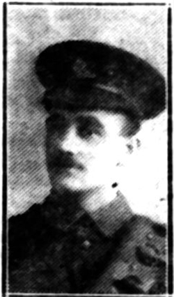
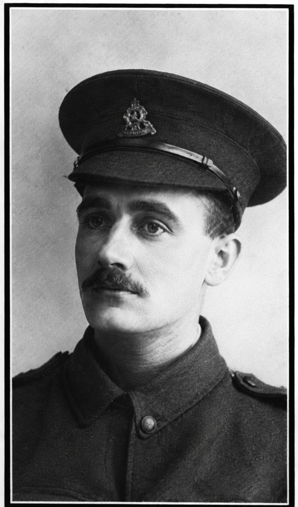

John Percival Williams


John Percival Williams was a Wealdstone resident who worked as a clerk in a stockbroker’s office before enlisting in the Honourable Artillery Company in January 1915. He served on home service at Larkhill Camp on Salisbury Plain and died aged 23 in June 1917 after being severely injured by his horse.
Civilian Life - John Percival Williams was born in Forest Gate, Essex, around 1894. By 1911 he was living with his family in Wealdstone and working as a clerk in a stockbroker’s office. He was the third son of Stephen Evans Williams and Charlotte Williams, whose home was at Enderley on High Road, Wealdstone. His father was the publisher of a weekly periodical. Before enlisting, Williams was a member of the Special Constabulary. He was also connected with the Lower School of John Lyon, where his name appears on the school's First World War memorial plaque and sundial.
Military Life - Williams enlisted in London in January 1915 and joined the Honourable Artillery Company (HAC). He served as a Driver with the 2a Battery, attached to the 126th Brigade, Royal Field Artillery, and was stationed at Larkhill Camp on Salisbury Plain.
He served in the United Kingdom and did not deploy overseas. He was assigned to the Reserve Battery of the Honourable Artillery Company. The primary role of reserve batteries during the war was to train men and provide replacements for the active units serving abroad, rather than deploying as a whole unit. On 30 May 1917, he returned to Larkhill after his final leave. On 1 June, he was severely kicked by his horse. He was taken to Fargo Military Hospital, where he died from his injuries the following day, 2 June 1917, aged 23. Williams was buried at Harrow Weald Cemetery on 9 June 1917.
His funeral was attended by family, friends, fellow members of the HAC, members of the Special Constabulary and other local residents. The service concluded with the Last Post sounded by HAC buglers from the Tower. His death was recorded on the John Lyon School memorials and the Harrow Weald Street Shrine War Memorial. He had two other brothers serving in the H.A.C. and another brother is with the Australian Field Force.